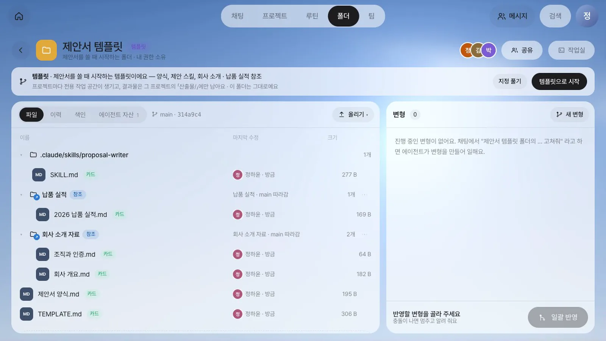
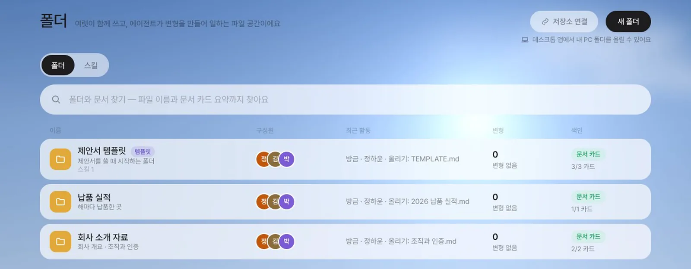
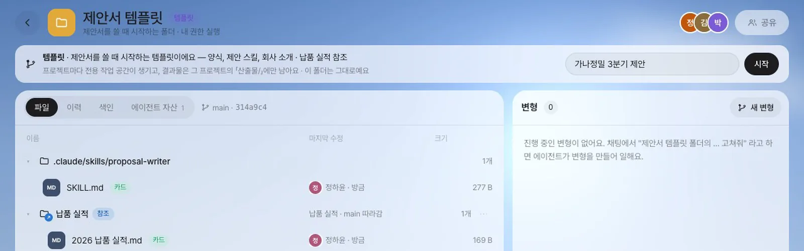
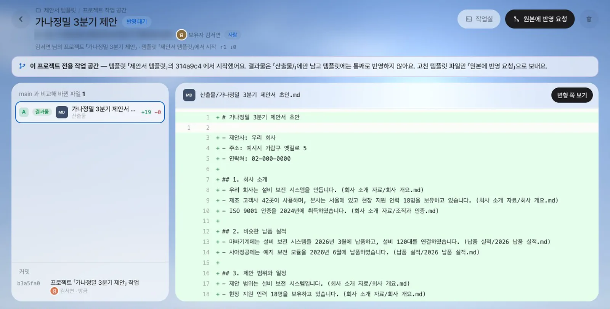
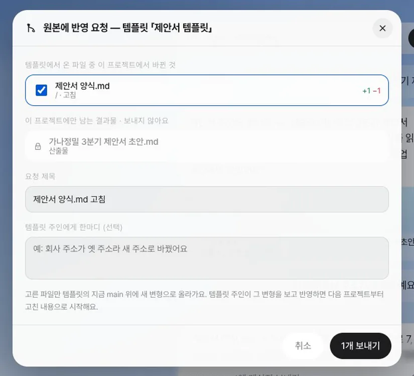
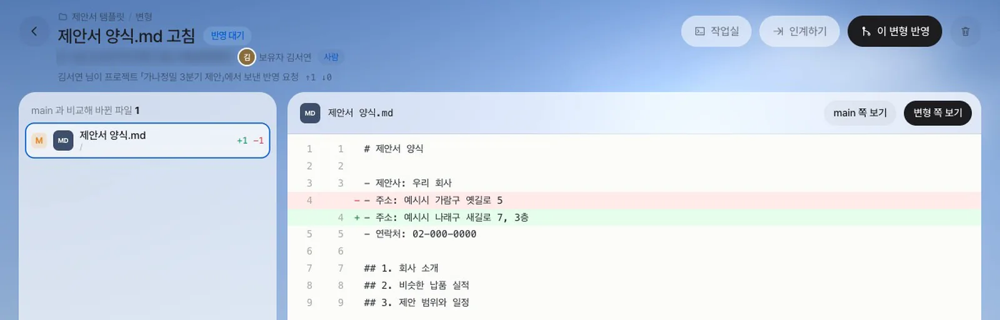
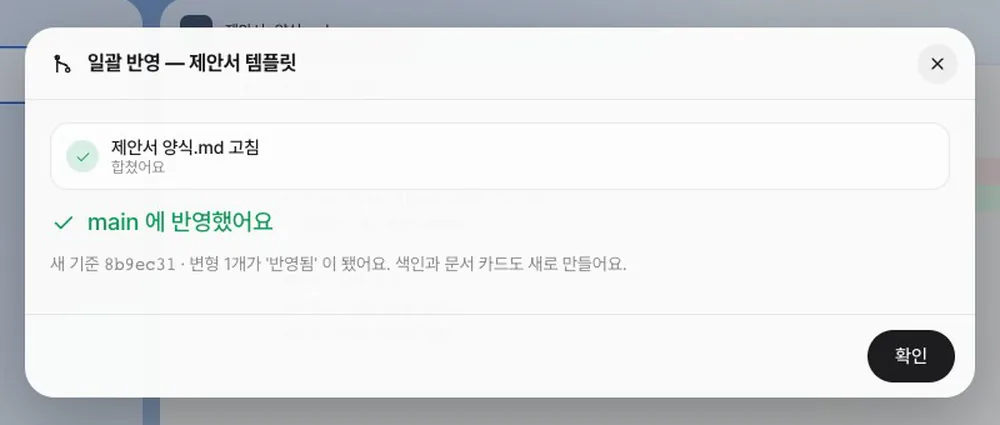
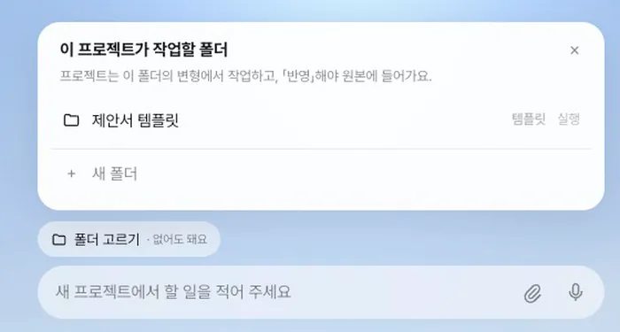
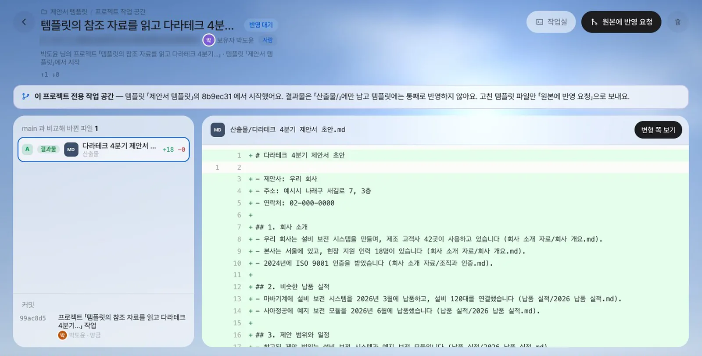

제안서 양식 · 제안 스킬 · 참조 자료를 묶은 폴더를 「템플릿」으로 지정하면, 프로젝트를 시작할 때마다 템플릿에서 갈라진 전용 작업 공간이 생깁니다. 결과물은 해당 프로젝트에만 남기고, 함께 쓰면 좋을 수정만 골라 「원본에 반영 요청」으로 템플릿 주인에게 보냅니다.
▶ 템플릿 폴더 · 3:33
13장에서는 팀이 함께 쓰는 공유 폴더 하나에 자료를 모으고, 고친 판(변형)을 골라 반영했습니다. 그런데 제안서처럼 같은 틀로 여러 번 시작하는 일은 조금 다릅니다. 양식과 회사 소개, 납품 실적은 같은 자료를 쓰더라도 결과물은 건마다 따로 남아야 하기 때문입니다. 이전 폴더를 복사하고 지난 초안을 지워서 시작하면, 폴더는 계속 늘어나고 양식의 오류를 고쳐도 내 복사본에만 남습니다.
이 장에서는 설비 보전 시스템을 판매하는 회사의 제안 업무에 템플릿 폴더를 써 봅니다. 정하윤 님이 「제안서 템플릿」을 만들어 두면, 김서연 님과 박도윤 님은 제안 요청이 들어올 때마다 그 템플릿에서 새 프로젝트를 시작합니다. 사람과 회사는 모두 지어낸 이름입니다.
무엇을#
- 폴더 소유자가 템플릿으로 지정을 누르면, 폴더에 「템플릿」 표시와 안내 띠가 붙습니다.
- 다른 사람은 템플릿으로 시작을 눌러 프로젝트를 엽니다. 이때 해당 프로젝트만 쓰는 전용 작업 공간이 생깁니다. 템플릿을 복사한 새 폴더가 아니라 템플릿에서 갈라진 공간이라, 「폴더」 목록이나 템플릿의 「변형」 목록에는 나오지 않고 해당 프로젝트 안에서만 보입니다.
- 프로젝트의 에이전트는 작업 공간에서 일합니다. 템플릿의 양식 · 스킬 · 안내 파일을 따르고, 참조 자리(다른 폴더를 가리키는 자리)는 요청한 사람의 권한으로 읽습니다. 결과물은 「산출물/」에 두고, 템플릿 원본은 그대로 유지합니다.
- 작업 중에 템플릿 자체를 고칠 일이 생기면 원본에 반영 요청을 보냅니다. 템플릿에서 온 파일 중 바뀐 것만 고를 수 있고, 결과물은 함께 보내지 않습니다.
- 템플릿 주인은 평소처럼 이 변형 반영으로 수정을 받아들입니다. 이후에 시작하는 프로젝트부터 고친 템플릿을 씁니다.
왜#
| 이럴 때 | 이전 폴더를 복사해 쓰면 | 템플릿 폴더로 시작하면 |
|---|---|---|
| 새 제안을 시작할 때 | 지난 초안을 지우고 이름부터 바꿔야 합니다 | 「템플릿으로 시작」을 한 번 누르면 깨끗한 틀로 시작합니다 |
| 결과물이 쌓일 때 | 공유 폴더에 건마다 초안이 쌓여 어지러워집니다 | 결과물은 각 프로젝트의 「산출물/」에만 남고, 템플릿은 깨끗하게 유지됩니다 |
| 회사 소개 · 실적을 쓸 때 | 복사해 둔 자료가 금방 낡습니다 | 참조 자리가 최신 원본을 가리키고, 읽는 사람의 권한에 따라 보입니다 |
| 양식에서 오류를 찾았을 때 | 내 복사본만 고쳐져 다음 사람도 같은 오류를 만납니다 | 고친 파일만 주인에게 보내고, 반영되면 다음 프로젝트부터 고친 틀을 씁니다 |
| 폴더 목록을 볼 때 | 프로젝트마다 폴더가 하나씩 늘어납니다 | 작업 공간은 프로젝트 안에만 있어 폴더 목록이 늘지 않습니다 |
준비#
| 항목 | 내용 |
|---|---|
| 등장인물 | 정하윤(템플릿 주인), 김서연 · 박도윤(제안 담당) |
| 참조할 폴더 | 「회사 소개 자료」(회사 개요.md · 조직과 인증.md), 「납품 실적」(2026 납품 실적.md). 정하윤이 만들고, 김서연 · 박도윤에게 보기 권한 부여 |
| 템플릿이 될 폴더 | 「제안서 템플릿」 — 설명 제안서를 쓸 때 시작하는 폴더. 정하윤이 만들고, 김서연 · 박도윤에게 실행 권한 부여 |
폴더를 만들고 파일을 올린 뒤 구성원을 초대하는 방법은 13장과 같습니다. 「제안서 템플릿」에는 다음 세 파일을 올립니다.
TEMPLATE.md — 템플릿 안내 파일입니다. 머리말의 description은 템플릿 안내 띠에 표시할 설명이고, outputs는 결과물을 모을 폴더입니다(적지 않으면 「산출물」).
---
description: 제안서를 쓸 때 시작하는 템플릿이에요 — 양식, 제안 스킬, 회사 소개 · 납품 실적 참조
outputs: 산출물/
---
# 제안서 템플릿
이 템플릿으로 프로젝트를 시작하면 결과물은 프로젝트 작업 공간의 `산출물/` 에만 남아요.
제안서 양식.md — 주소는 일부러 옛 주소로 둡니다. 따라 하기 5에서 고칩니다.
# 제안서 양식
- 제안사: 우리 회사
- 주소: 예시시 가람구 옛길로 5
- 연락처: 02-000-0000
## 1. 회사 소개
## 2. 비슷한 납품 실적
## 3. 제안 범위와 일정
.claude/skills/proposal-writer/SKILL.md — 제안 스킬입니다. 이 경로에 두어야 폴더의 「에이전트 자산」에서 스킬로 인식합니다. 「올리기 ▾」 › 「폴더 올리기」를 누르면 선택한 폴더 안의 파일을 경로 그대로 올릴 수 있습니다.
---
name: proposal-writer
description: 제안서 양식과 참조 자료로 제안서 초안을 써요
---
1. 「회사 소개 자료」와 「납품 실적」 참조에서 사실만 가져와요.
2. 양식의 순서를 지켜요.
3. 결과물은 산출물/ 폴더에 둬요.
마지막으로 참조 자리 둘을 더합니다. 「제안서 템플릿」에서 올리기 ▾ › 참조 더하기를 누르고 「회사 소개 자료」 › 폴더 전체 › 다음을 고른 뒤, 「이 폴더에서 보일 이름」을 회사 소개 자료로 바꿔 더하기를 누릅니다. 「납품 실적」도 같은 방법으로 더합니다. 참조 자리에는 원본의 내용이 복사되지 않습니다. 최신 원본을 가리키기만 하며, 내용은 원본 폴더의 구성원만 볼 수 있습니다.
따라 하기 1 — 폴더를 템플릿으로 지정하기#
정하윤 계정으로 진행합니다.
- 위쪽 폴더에서 「제안서 템플릿」을 엽니다. 파일 목록에 스킬 폴더
.claude/skills/proposal-writer, 「참조」 표시가 붙은 납품 실적과 회사 소개 자료,제안서 양식.md,TEMPLATE.md가 보입니다. 참조 자리 옆에는 「납품 실적 · main 따라감」처럼 가리키는 원본이 표시됩니다. - 에이전트 자산 탭을 누릅니다. 「Claude Code」 묶음에 스킬 proposal-writer가 보입니다. 이 폴더에서 일하는 에이전트가 따를 작업 방법입니다. 확인한 뒤 파일 탭으로 돌아옵니다.
- 머리줄의 템플릿으로 지정을 누릅니다. 제목 옆에 「템플릿」 표시가 붙고, 위쪽에 안내 띠가 생깁니다. 띠에는
TEMPLATE.md에 적은 설명(「템플릿 · 제안서를 쓸 때 시작하는 템플릿이에요 — …」)과 「프로젝트마다 전용 작업 공간이 생기고, 결과물은 그 프로젝트의 「산출물/」에만 남아요 · 이 폴더는 그대로예요」가 보입니다. 오른쪽에는 지정 풀기와 템플릿으로 시작이 있습니다.
「제안서 템플릿」의 「템플릿」 표시와 안내 띠, 스킬 · 참조 자리 둘 · 양식 · 안내 파일 - 폴더 목록으로 돌아갑니다. 「제안서 템플릿」 줄에만 「템플릿」 표시가 붙어 있어, 어느 폴더에서 시작하면 되는지 한눈에 알 수 있습니다.

「폴더」 목록 — 「제안서 템플릿」에만 붙은 「템플릿」 표시
따라 하기 2 — 템플릿으로 프로젝트 시작하기#
이제 김서연 계정으로 바꿉니다. 가나정밀에서 3분기 제안을 요청받았습니다.
- 「제안서 템플릿」을 열고 안내 띠의 템플릿으로 시작을 누릅니다.
- 띠 안에 이름 입력 칸이 나타납니다.
가나정밀 3분기 제안을 적고 시작을 누릅니다.
안내 띠의 이름 칸 — 프로젝트 이름을 적고 「시작」 - 새 프로젝트가 열리고 위쪽에 작업 공간 막대가 보입니다. 막대에는 「템플릿 · 제안서 템플릿 · 전용 작업 공간 · 바뀐 것 없음」과 원본에 반영 요청 단추가 있습니다.
작업 공간 막대 — 시작한 템플릿과 변경 사항을 확인합니다
이 작업 공간은 템플릿을 복사해 만든 새 폴더가 아니라, 템플릿에서 갈라져 나온 이 프로젝트만의 공간입니다. 그래서 「폴더」 목록이나 템플릿의 「변형」 목록에는 나오지 않고, 프로젝트를 시작한 김서연 님에게만 해당 프로젝트 안에서 보입니다. 템플릿 주인인 정하윤 님도 열어 볼 수 없습니다.
따라 하기 3 — 참조 자료를 읽고 초안 쓰기#
- 입력창에 다음과 같이 적어 보냅니다.
템플릿의 참조 자료를 읽고 가나정밀 3분기 제안서 초안을 써 줘 - 계획 카드가 나타나고(「템플릿 참조 자료 읽기」 → … → 「제안서 초안 작성」) 에이전트가 작업을 시작합니다. 실습에서는 2~3분쯤 걸렸습니다.
- 답이 오면(실습에서는 「제안서 초안을 썼어요 — 「산출물/가나정밀 3분기 제안서 초안.md」 …」) 그 아래 칩에 「이 프로젝트 작업 공간에 담았어요 · 가나정밀 3분기 제안서 초안.md · 템플릿 「제안서 템플릿」 원본은 그대로예요」가 표시되고, 막대는 「전용 작업 공간 · 바뀐 것 1건」으로 바뀝니다.
초안 작성 후 — 결과물은 프로젝트 작업 공간에만 남고, 템플릿 원본은 그대로입니다
에이전트는 템플릿의 양식과 스킬을 따르고, 「회사 소개 자료」와 「납품 실적」 참조 자리를 김서연 님의 권한으로 읽습니다. 김서연 님이 볼 수 없는 원본이라면 에이전트도 읽지 못합니다. 템플릿에 자료를 묶어 두어도 원래 볼 수 없던 자료까지 열리지는 않습니다.
따라 하기 4 — 작업 공간 열어 보기#
- 막대의 「전용 작업 공간 · 바뀐 것 1건」을 누르면 작업 공간 화면이 열립니다.
- 위쪽 안내에 「이 프로젝트 전용 작업 공간 — 템플릿 「제안서 템플릿」의 … 에서 시작했어요. 결과물은 「산출물/」에만 남고 템플릿에는 통째로 반영하지 않아요. 고친 템플릿 파일만 「원본에 반영 요청」으로 보내요.」가 보입니다. 어느 판의 템플릿에서 시작했는지 여기서 확인할 수 있습니다.
- 바뀐 파일 목록에서 초안에 「결과물」 표시가 붙어 있는지 보고, 오른쪽에서 초안 내용을 확인합니다.

작업 공간 — 초안의 「결과물」 표시와 내용. 일반 변형의 「인계하기」 · 「이 변형 반영」 대신 「원본에 반영 요청」이 있습니다 - 왼쪽 위 ‹를 누르면 프로젝트로 돌아갑니다.
따라 하기 5 — 양식을 고치고 원본에 반영 요청 보내기#
초안을 살펴보니 양식의 회사 주소가 옛 주소입니다.
- 이렇게 부탁합니다.
에이전트가 이 작업 공간의
양식의 회사 주소가 옛 주소예요. 새 주소로 고쳐 줘제안서 양식.md에 있는 주소를 「예시시 나래구 새길로 7, 3층」으로 고칩니다. 실습에서는 초안의 주소도 함께 고치고, 「양식은 템플릿 파일이라, 다른 프로젝트에도 쓰이려면 원본에 반영 요청을 보내 주세요」라고 알려 줬습니다. 이때 템플릿 원본의 양식에는 아직 옛 주소가 남아 있습니다. - 바로잡은 주소를 다음 제안에서도 쓰려면 템플릿에 반영해야 합니다. 막대의 원본에 반영 요청을 누릅니다.
- 「원본에 반영 요청 — 템플릿 「제안서 템플릿」」 시트가 열립니다. 「템플릿에서 온 파일 중 이 프로젝트에서 바뀐 것」에는
제안서 양식.md가 선택되어 있고, 「이 프로젝트에만 남는 결과물 · 보내지 않아요」에는 초안이 자물쇠와 함께 따로 표시됩니다. 결과물을 실수로 함께 보낼 일이 없습니다.
반영 요청 시트 — 바뀐 템플릿 파일만 선택하고, 결과물은 「보내지 않아요」에 남깁니다 - 「요청 제목」은 「제안서 양식.md 고침」 그대로 두고, 「템플릿 주인에게 한마디 (선택)」에
회사 주소가 옛 주소라 새 주소로 바꿨어요를 적은 뒤 1개 보내기를 누릅니다. - 시트가 닫히고 「템플릿 「제안서 템플릿」 주인에게 반영 요청을 보냈어요 · 제안서 양식.md · 결과물은 이 프로젝트에만 남아요」가 보입니다.
따라 하기 6 — 템플릿 주인이 반영하기#
정하윤 계정으로 돌아오면 「김서연님이 템플릿 「제안서 템플릿」에 반영을 요청했어요」 알림이 와 있습니다.
- 알림을 누르거나 「제안서 템플릿」을 엽니다. 「변형」 목록에 「반영 요청」 표시가 붙은 변형이 보입니다.
- 변형을 열면 제목은 「제안서 양식.md 고침」, 출처는 「김서연 님이 프로젝트 「가나정밀 3분기 제안」에서 보낸 반영 요청」입니다. 바뀐 파일은
제안서 양식.md하나이고, 수정한 내용도 주소 한 줄뿐입니다. 초안은 들어 있지 않습니다.
반영 요청으로 받은 변형 — 양식의 주소 한 줄만 바뀌었습니다 - 이 변형 반영을 누르고, 창에서 반영 시작을 누릅니다. 「main 에 반영했어요」가 보이면 템플릿의 양식에도 새 주소가 적용됩니다. 템플릿에는
산출물/폴더가 생기지 않습니다.
반영 완료 — 템플릿 기준본에 적용된 새 주소
따라 하기 7 — 다음 프로젝트는 고친 템플릿에서#
다음 제안은 박도윤 님이 맡습니다. 이번에는 「새 프로젝트」 화면에서 시작해 봅니다.
- 박도윤 계정에서 위쪽 프로젝트를 누르고 「새 프로젝트」 화면을 엽니다. 입력창 아래 폴더 고르기를 누르면 「이 프로젝트가 작업할 폴더」 목록이 열리고, 「제안서 템플릿」 옆에 「템플릿」 표시가 보입니다.

「새 프로젝트」의 폴더 선택 — 「템플릿」 표시로 시작할 폴더를 찾습니다 - 「제안서 템플릿」을 고르면 입력창 위 칩이 「제안서 템플릿 · 템플릿으로 시작」으로 바뀝니다.
- 다음과 같이 적어 보냅니다. 첫 요청과 함께 프로젝트와 작업 공간이 생기고, 막대가 보입니다.
템플릿의 참조 자료를 읽고 다라테크 4분기 제안서 초안을 써 줘 - 답이 오면 막대에서 작업 공간을 엽니다. 바뀐 파일은 박도윤 님의 초안 하나뿐이고, 초안에는 새 주소(「예시시 나래구 새길로 7, 3층」)가 들어 있습니다. 정하윤 님이 반영한 양식으로 시작했기 때문입니다. 김서연 님의 초안은 보이지 않습니다.

박도윤 님의 작업 공간 — 본인의 초안 하나와 고친 양식의 새 주소 - 「제안서 템플릿」을 열어 보면 「변형」은 0개이고 「지난 변형 1개」만 접혀 있습니다. 두 프로젝트의 작업 공간은 템플릿 어디에도 나타나지 않습니다.
알아 둘 점#
누가 무엇을 할 수 있나요
| 사람 | 할 수 있는 것 |
|---|---|
| 템플릿 소유자 | 「템플릿으로 지정」 · 「지정 풀기」, 반영 요청 확인 후 「이 변형 반영」 |
| 템플릿의 실행 · 편집 구성원 | 「템플릿으로 시작」, 「새 프로젝트」에서 템플릿 선택 |
| 템플릿의 보기 구성원 | 템플릿을 열어 볼 수 있지만, 프로젝트를 시작할 수는 없습니다 |
| 프로젝트를 시작한 사람 | 본인 작업 공간 확인, 「원본에 반영 요청」. 다른 사람의 작업 공간은 열 수 없습니다 |
작업 공간은 통째로 반영되지 않습니다 — 작업 공간에는 「이 변형 반영」이나 「인계하기」가 없고, 일괄 반영 대상에도 넣을 수 없습니다. 템플릿에 수정을 전달하는 방법은 「원본에 반영 요청」뿐입니다.
반영 요청에 넣을 수 있는 파일 — 템플릿에서 온 파일 가운데 결과물 폴더 밖에서 고치거나 지운 파일만 고를 수 있습니다. 결과물 폴더 아래의 파일과 이 프로젝트에서 새로 만든 파일은 「보내지 않아요」 쪽에 남습니다. 그사이 템플릿에서도 같은 파일의 다른 부분을 수정했다면 두 수정을 합쳐서 보냅니다. 같은 부분을 수정했다면 보내지 않고 「템플릿에서도 그 사이 같은 곳이 바뀌었어요: … — 템플릿 주인과 먼저 맞춰 주세요.」라고 알려 줍니다.
작업 공간은 시작한 순간의 템플릿에서 갈라집니다 — 그래서 수정이 반영된 뒤에 시작한 프로젝트부터 고친 양식을 씁니다. 템플릿 지정을 풀어도 이미 시작한 프로젝트의 작업 공간은 그대로 남습니다.
첫 판(v0)의 한계
지금은 템플릿에 새로 만든 파일(예: 새 스킬)을 반영 요청으로 보낼 수 없습니다. 템플릿 주인이 요청에 「수정 요청」이나 「닫기」로 답하는 기능과 템플릿 프로젝트 안에서 시작한 프로세스의 에이전트 단계가 작업 공간에서 일하는 기능도 다음 단계에서 다룰 예정입니다.
이 장의 화면
화면은 위 영상과 같은 장면입니다. 영상 속 에이전트는 시연용 대역이지만, 폴더를 읽고 쓰는 방식은 실제와 같습니다. 실제 에이전트와 함께해 보면 답변 문장과 걸리는 시간은 조금씩 다를 수 있습니다. 사람과 회사, 주소와 연락처는 모두 지어낸 것입니다.
다음 장에서는 폴더에 넣기 전에 채팅의 산출물을 팀원 한 사람에게 바로 건네는 공유와 @멘션을 살펴봅니다(15장).
확인 문제
- 정하윤 님(템플릿 소유자)이 「제안서 템플릿」의 「변형」 목록에서 김서연 님의 작업 공간을 찾아 초안을 열어 볼 수 있나요?
- 김서연 님이 「원본에 반영 요청」 시트에서 초안도 함께 템플릿에 넣고 싶습니다. 어떻게 되나요?
- 정하윤 님이 주소 수정을 반영하기 전에 박도윤 님이 프로젝트를 시작했다면, 박도윤 님의 작업 공간에 있는 양식에는 어느 주소가 들어 있나요?
답
- 볼 수 없습니다. 작업 공간은 템플릿의 「변형」 목록이나 「폴더」 목록에 나오지 않고, 프로젝트를 시작한 김서연 님만 해당 프로젝트에서 열 수 있습니다. 정하윤 님에게는 김서연 님이 골라 보낸 반영 요청만 전달됩니다.
- 보낼 수 없습니다. 초안은 「산출물/」 아래의 결과물이라 시트의 「이 프로젝트에만 남는 결과물 · 보내지 않아요」 쪽에 자물쇠와 함께 표시됩니다. 템플릿에서 온 파일 중 바뀐 것만 고를 수 있습니다.
- 옛 주소입니다. 작업 공간은 시작한 순간의 템플릿에서 갈라지므로, 반영 전에 시작한 박도윤 님의 양식에는 옛 주소가 들어 있습니다. 반영 뒤에 시작한 프로젝트부터 새 주소를 씁니다.